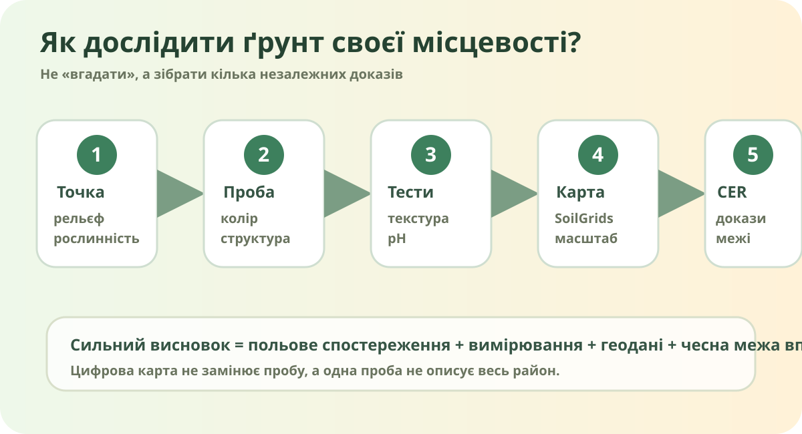

Чи можна назвати ґрунт лише за кольором?

Реальний профіль чорнозему степової зони України. Wikimedia Commons, Michaila vnuk, CC BY-SA.

Проба без «ну, земля як земля»
1. Механічний склад
Зволожте щіпку ґрунту й спробуйте скачати шнур.
2. pH
1 частина ґрунту + приблизно 2–3 частини чистої води, перемішати, дати відстоятися, виміряти індикаторним папірцем.
pH: 7.0 — нейтральний
Шкільний орієнтовний тест. Не замінює лабораторний аналіз.
3. Інфільтрація
Якщо умови безпечні, порівняйте, як швидко невелика однакова порція води вбирається у двох точках.
Повільне вбирання може бути пов'язане з ущільненням, глинистістю або перезволоженням — одного спостереження для діагнозу замало.
Зберіть польовий паспорт
SoilGrids: цифровий «другий погляд»
ISRIC SoilGrids дає глобальні прогнозні карти властивостей ґрунту з роздільністю близько 250 м: pH, органічний вуглець, вміст піску, пилу й глини та інші показники на різних глибинах.
Реальна OpenStreetMap. Масштабуйте до своєї області/населеного пункту.

Реальне фото з категорії «Soil profiles in Ukraine», Wikimedia Commons.

Другий реальний профіль/зразок із Запорізької області, Wikimedia Commons.

Південний чорнозем степової зони України, Wikimedia Commons.
Що насправді визначає властивості ґрунту?
Дає мінеральну основу й впливає на гранулометричний склад.
Керують промиванням, випаровуванням, зволоженням і швидкістю процесів.
Формують органічну речовину, структуру, біологічну активність.
Впливає на стік, ерозію, накопичення вологи й речовини.
Ґрунтовий профіль формується тривалими процесами, а не «за сезон».
Обробіток, зрошення, ущільнення й захисні практики можуть швидко змінити стан верхнього шару.
Модель → проба → висновок
Найсильніший висновок — не «у нас чорнозем, бо він чорний», а такий, що поєднує польові ознаки + вимірювання + просторові дані + межі методу.
Заповніть польовий опис, pH і доказ із SoilGrids — індикатор доказовості зросте.
Який ґрунт у моїй місцевості — і наскільки я впевнена/впевнений?
Мікродослідження «2 точки»
Порівняйте дві безпечні точки своєї місцевості: наприклад газон і клумбу/город, парк і двір. Для кожної: фото поверхні, текстура, орієнтовний pH, ознаки ущільнення/ерозії, прогноз із SoilGrids. Сформулюйте 3–4 речення висновку: що відрізняється і чому.
Не збирайте точні GPS-координати біля дому і не працюйте в небезпечних/закритих зонах.
§32 + цифровий підручник
Опрацюйте §32. Якщо пряме посилання на підручник зміниться, використовуйте офіційну електронну бібліотеку ІМЗО.
Електронна бібліотека ІМЗОДля поглиблення: SoilGrids дозволяє переглянути pH, органічний вуглець, пісок, пил і глину для стандартних інтервалів глибини.